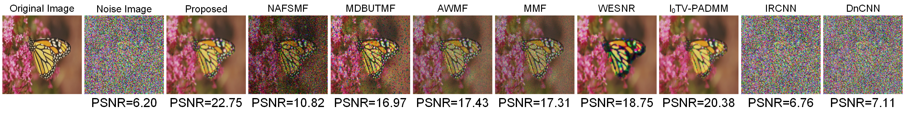
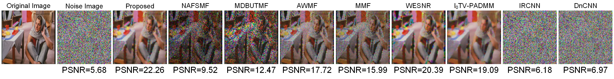

Impulse noise corruption in digital images frequently occurs because of errors generated by noisy sensors or communication channels, such as faulty memory locations in devices, malfunctioning pixels within a camera, or bit errors in transmission. Although recently developed big data streaming enhances the viability of video communication, visual distortions in images caused by impulse noise corruption can negatively affect video communication applications. In addition, sparsity, density, and multimodality in large volumes of noisy images have often been ignored in recent studies, whereas these issues have become important because of the increasing viability of video communication services. To effectively eliminate the visual effects generated by the impulse noise from the corrupted images, this study proposes a novel model that uses a devised cost function involving semisupervised learning based on a large amount of corrupted image data with a few labeled training samples. The proposed model qualitatively and quantitatively outperforms the existing state-of-the-art image reconstruction models in terms of the denoising effect.


Reimplementation in Matlab: [GitHub]
J. L. Yin, B. H. Chen, and Y. Li, "Highly Accurate Image Reconstruction for Multimodal Noise Suppression Using Semisupervised Learning on Big Data," IEEE Transactions on Multimedia, vol. 20, no. 11, pp. 3045-3056, Nov. 2018. [pdf][bib]